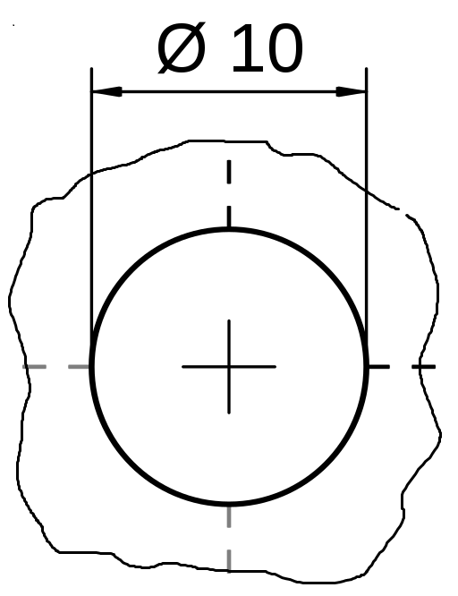

Primary pacenote / active
0.24 KM← L4
TIGHTENS → L2 / HIGH CONFIDENCE / ROUTE REV 003
An original navigation instrument built from disciplined technical drafting, nocturnal mountain-road atmosphere, and restrained analog racing energy.
Use roads and mechanical diagrams as atmosphere. The active screen stays quieter than this board; grain and scan texture are for pre-drive, replay, and recap.

Cyan describes position and route continuity. Red is an active signal, not a decoration. Paper carries instructions.
Primary posture: dark, precise, and angular. Use color as an operational vocabulary rather than a theme wash.
Display type is compressed and forceful for curve calls. Monospace appears in labels and system metadata only—never for long reading.
A component lab for the app: sharp technical framing, clear information hierarchy, and no rounded-card dashboard filler.
This is the intended driving posture: big readable instruction, sparse top-line status, and a map that remains the primary visual system.
These tokens and components are ready to transfer into the Compose theme as semantic color/type/spacing equivalents.
:root {
--void: #0b0d0e;
--graphite: #151a1b;
--paper: #f1f4ed;
--signal-red: #e2493d;
--telemetry-cyan: #63d4d0;
--grid: #405052;
}
.pacenote-card {
background: var(--void);
border-top: 2px solid var(--telemetry-cyan);
padding: 24px;
color: var(--paper);
}
.pacenote-value {
font-family: "Arial Narrow", sans-serif;
font-weight: 700;
font-size: clamp(64px, 14vw, 112px);
line-height: .78;
letter-spacing: -.06em;
}
.pacenote-value .severity { color: var(--signal-red); }
.system-label {
color: var(--telemetry-cyan);
font: 700 11px/1 ui-monospace, monospace;
letter-spacing: .08em;
}Downloaded locally for this inspiration board. Confirm license suitability again before a public/commercial release or replacing these with final commissioned imagery.
Dark Mountains (Unsplash) — Wikimedia Commons, listed CC0 1.0.
Long road into the mountains (Unsplash) — Wikimedia Commons, listed CC0 1.0.
Technical Drawing Hole 01 — Wikimedia Commons, public domain.
.jpg){kind=link}
.jpg){kind=link}
{kind=link}